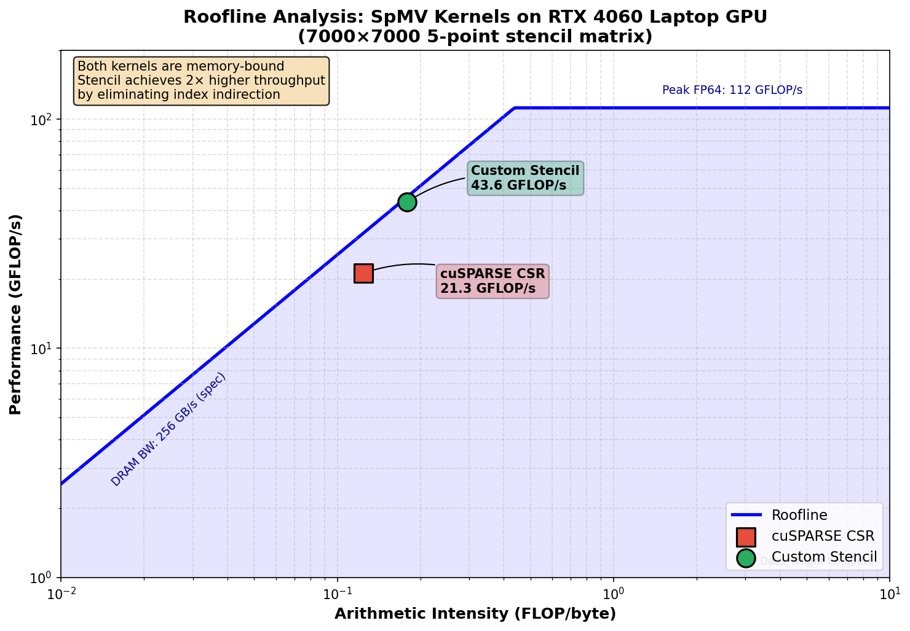
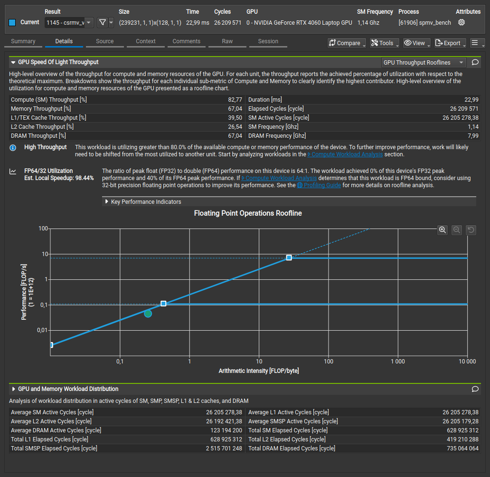
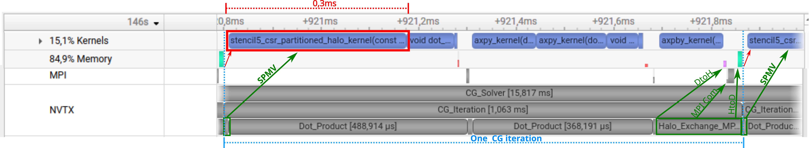
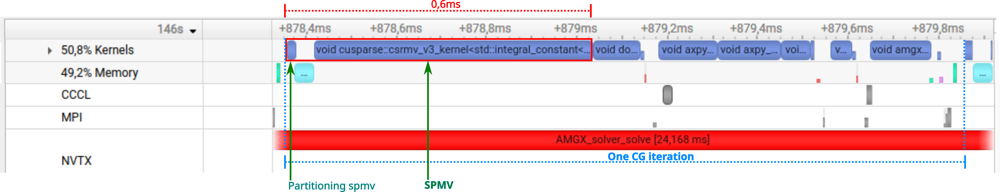

Profiling Analysis: Why Stencil Specialization Wins¶
This document explains why the custom CG solver outperforms NVIDIA AmgX, using profiling data from Nsight Systems and Nsight Compute.
Hardware note. Performance numbers in this document (solver timings, kernel breakdowns, SpMV throughput) were measured on 8× NVIDIA A100-SXM4-80GB (NVLink NV12). The roofline analysis in §2 was profiled on an RTX 4060 Laptop GPU due to NCU permission constraints on shared A100 hosts. Both kernels remain memory-bound on either architecture, so the relative comparison (95% vs 67% memory throughput) transfers; absolute GFLOP/s values reflect the RTX 4060 only.
Executive Summary¶
| Finding | Impact |
|---|---|
| AmgX spends 48% of compute time in generic CSR SpMV | Primary optimization target |
| Custom stencil kernel achieves 2× higher throughput | Eliminates index indirection |
| Stencil-aware halo exchange: 160 KB per neighbor | Minimal communication overhead |
| Overall solver speedup: 1.40× single-GPU, 1.44× multi-GPU | Consistent advantage at scale |
Key insight: By exploiting the known 5-point stencil structure, the custom solver eliminates memory indirections and minimizes communication, translating kernel-level gains into solver-level performance.
1. Kernel Distribution (Single-GPU)¶
AmgX Kernel Breakdown (10k×10k, 1 GPU)¶
| Kernel Type | Time % | Notes |
|---|---|---|
| cuSPARSE CSR SpMV | 48% | Generic sparse matrix-vector multiply |
| AXPY | 19% | Vector addition |
| Dot product | 10% | Inner product reductions |
| AXPBY | 9% | Scaled vector operations |
| Other | 14% | Setup, synchronization, etc. |
Custom CG Kernel Breakdown (10k×10k, 1 GPU)¶
| Kernel Type | Time % | Notes |
|---|---|---|
| Stencil SpMV | 41% | Structure-aware kernel |
| AXPY | 29% | Vector addition |
| Dot product (cuBLAS) | 16% | cuBLAS ddot |
| AXPBY | 13% | Scaled vector operations |
Both breakdowns measured on a single A100 to isolate kernel-level distribution from communication overhead. Multi-GPU scaling is analyzed separately in §3.
Observation¶
SpMV dominates in both implementations (~40-50% of total time), making it the primary optimization target. The custom kernel's 2× speedup on this operation drives the overall solver improvement.
2. SpMV Kernel Analysis¶
Why Stencil Kernels Are Faster¶
The 5-point stencil discretization produces a sparse matrix with a predictable structure:
Each interior row has exactly 5 non-zeros at fixed offsets: -grid_size, -1, 0, +1, +grid_size.
Generic CSR (cuSPARSE):
- Must read col_idx[] array for every non-zero
- Indirect memory accesses → cache misses
- Cannot predict next memory location
Stencil-aware kernel (custom): - Column indices computed from row index (no lookup) - Grouped memory accesses: W-C-E (stride-1) before N-S (stride grid_size) - 95% of rows use fast path (interior points)
Measured Performance (A100 80GB)¶
| Implementation | Time (20k×20k) | Bandwidth | Speedup |
|---|---|---|---|
| cuSPARSE CSR | 26.77 ms | 1195 GB/s | baseline |
| Stencil kernel | 12.86 ms | 2364 GB/s | 2.08× |
Roofline Analysis (Nsight Compute)¶
Profiled on RTX 4060 Laptop GPU (7k×7k matrix, same relative behavior):

| Kernel | Duration | Memory Throughput | Performance |
|---|---|---|---|
| cuSPARSE CSR | 22.99 ms | 67% | 21.3 GFLOP/s |
| Custom Stencil | 11.25 ms | 95% | 43.6 GFLOP/s |
Key observations: - Both kernels are memory-bound (positioned on the sloped part of the roofline) - Stencil achieves 95% memory throughput vs 67% for CSR - The 2× speedup comes from better memory system utilization, not more compute - CSR's index indirection creates irregular access patterns that reduce effective bandwidth
Raw Nsight Compute Screenshots
cuSPARSE CSR:

Custom Stencil:
Arithmetic Intensity Analysis¶
Both kernels are memory-bound, but the stencil kernel achieves higher effective bandwidth:
| Metric | CSR | Stencil |
|---|---|---|
| Bytes per row | 88 B | 48 B |
| (5 values + 5 indices + 1 x + 1 y) | (5 values + 1 x + 1 y, no indices) | |
| Arithmetic intensity | 0.11 FLOP/B | 0.21 FLOP/B |
The stencil kernel moves 45% less data per row by eliminating index storage and lookups.
3. Multi-GPU Scaling Analysis¶
Communication Pattern Comparison¶
| Aspect | Custom CG | AmgX |
|---|---|---|
| Halo exchange | 160 KB per neighbor | Generic CSR pattern |
| Method | MPI explicit staging | Internal NCCL/MPI |
| Overlap | None (synchronous) | Internal optimization |
Why 160 KB?¶
For a 10k×10k grid partitioned across 8 GPUs: - Each GPU owns ~12,500 rows - Halo zone = 1 row = 10,000 doubles = 80 KB - Two neighbors (top + bottom) = 160 KB total
Compare to naive AllGather: 100M doubles × 8 bytes = 800 MB (5000× more data).
Scaling Efficiency¶
At 8 GPUs, the custom CG achieves a 6.94× speedup vs AmgX's 6.99× — similar parallel efficiency. The custom solver maintains its single-GPU advantage (1.40×) at every scale, reaching 1.44× at 8 GPUs.
Full Custom CG vs AmgX comparison table (10k/15k/20k, 1 GPU and 8 GPUs) in results.md.
Timeline Comparison (Nsight Systems)¶
Custom CG Solver (4k×4k, 2 GPUs):

NVIDIA AmgX (4k×4k, 2 GPUs):

Figure — Nsight Systems timeline of one Conjugate Gradient iteration (2 MPI ranks, A100 GPU). Top: custom CG using stencil-optimized CSR SpMV; bottom: NVIDIA AmgX under the same configuration. CUDA HW tracks show actual GPU kernel execution; MPI tracks highlight halo exchange phases. Annotations (green arrows, red rectangles) mark key phases: SpMV, halo exchange (DtoH → MPI → HtoD), and one full CG iteration. The AmgX iteration is approximately twice as long as the Custom CG, driven primarily by the longer cuSPARSE CSR SpMV kernel.
NVTX ranges denote algorithmic phases and do not necessarily correspond to exact GPU kernel execution time; CUDA HW tracks provide the authoritative timing.
Key observation: Performance gains come from a more efficient SpMV kernel and reduced communication volume, not from compute-communication overlap. MPI halo exchange is synchronous in both implementations.
Speedup Attribution¶
The 1.40× single-GPU and 1.44× multi-GPU advantage of the custom CG over AmgX stems from three compounding factors:
- SpMV kernel specialization (primary driver) — Eliminating index indirection in the generic CSR representation, by exploiting the known 5-point stencil pattern, provides a 2.08× isolated throughput gain on the dominant kernel (48% of AmgX execution time on the single-GPU breakdown).
- Halo exchange volume — Sending only the stencil-specific boundary rows (160 KB per neighbor for a 10k×10k grid on 8 GPUs) replaces generic communication patterns and AllGather-based approaches that would require orders of magnitude more data.
- BLAS1 memory access patterns — Coalesced accesses in AXPY/AXPBY/dot kernels operating on partitioned local vectors improve memory throughput compared to AmgX's library-level operations.
Theoretical vs Observed¶
Using Amdahl's Law with SpMV = 48% of time and 2× speedup:
Observed speedup (1.40×) slightly exceeds the simple Amdahl estimate. The 6% residual is within the margin where the isolated-kernel speedup (2.08×) and the in-solver effective speedup may diverge: microbenchmark and full-solver execution differ in cache state, kernel launch patterns, and co-running operations. A precise attribution would require per-kernel timing inside the full solver run; this is beyond the scope of the current comparison.
Methodology¶
Profiling Tools¶
Nsight Systems (timeline analysis):
# Custom CG (1 GPU)
nsys profile --trace=cuda,nvtx -o custom_1gpu \
./bin/cg_solver_mgpu_stencil matrix/stencil_10000x10000.mtx
# Custom CG (multi-GPU)
nsys profile --trace=cuda,mpi,nvtx -o custom_mgpu \
mpirun -np 4 ./bin/cg_solver_mgpu_stencil matrix/stencil_10000x10000.mtx
# AmgX (1 GPU)
nsys profile --trace=cuda,nvtx -o amgx_1gpu \
./external/benchmarks/amgx/amgx_cg_solver matrix/stencil_10000x10000.mtx
Nsight Compute (kernel analysis):
# cuSPARSE CSR roofline
ncu --set roofline -o roofline_cusparse \
./bin/spmv_bench matrix/stencil_10000x10000.mtx --mode=cusparse-csr
# Stencil kernel roofline
ncu --set roofline -o roofline_stencil \
./bin/spmv_bench matrix/stencil_10000x10000.mtx --mode=stencil5
Available Profile Data¶
| Profile | Location | Hardware |
|---|---|---|
| Custom 1 GPU (10k) | profiling/nsys/mpi_1ranks_profile_10000.nsys-rep |
A100 |
| Custom 2 GPUs (10k) | profiling/nsys/mpi_2ranks_profile_10000.nsys-rep |
A100 |
| AmgX 1 GPU (10k) | profiling/nsys/amgx_1ranks_profile_10000.nsys-rep |
A100 |
| AmgX 2 GPUs (10k) | profiling/nsys/amgx_2ranks_profile_10000.nsys-rep |
A100 |
| CSR roofline | profiling/ncu/roofline_cusparse_csr_7000_rtx4060.ncu-rep |
RTX 4060 Laptop |
| Stencil roofline | profiling/ncu/roofline_stencil_7000_rtx4060.ncu-rep |
RTX 4060 Laptop |
Conclusions¶
-
SpMV is the bottleneck: 48% of AmgX time, making kernel optimization high-impact
-
Structure exploitation works: Eliminating index indirection yields 2× SpMV speedup
-
Gains compound at scale: Single-GPU advantage (1.40×) maintained through 8 GPUs (1.44×)
-
Not a limitation of AmgX: AmgX correctly handles arbitrary sparse matrices; the performance gap reflects the value of specialization when problem structure is known